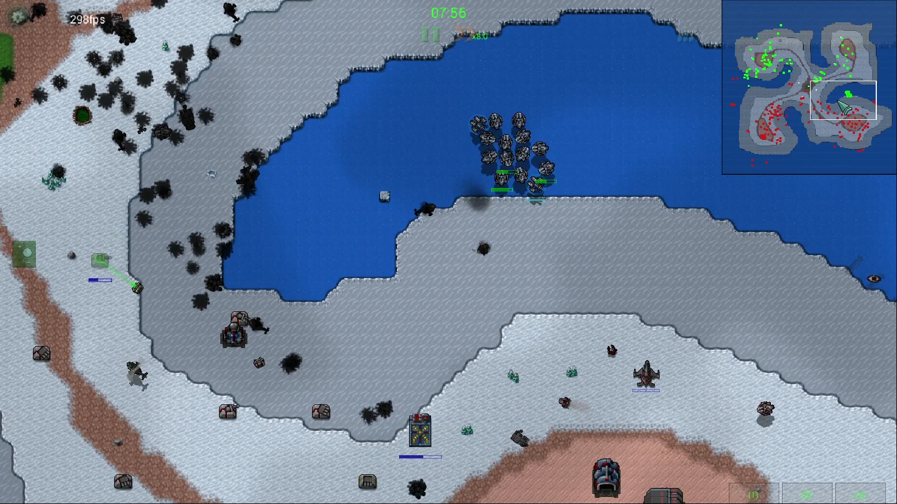

01 / OBSERVE
读懂正在发生的战局
查询资源、收入、单位、建筑、生产队列与可见敌情；结合战报和截图，持续获得决策所需的信息。
状态查询 · 视野约束 · 实机截图
从读懂战局，
到指挥整场战争。
在熟悉的像素战场里，让智能体经营基地、调度军队、与对手实时交锋。基于 RWX 扩展，把经典即时战略游戏变成可观察、可控制的智能体战场。

GPT-6.1 Sol × Very Hard AIRusted Warfare（铁锈战争） 是 Corroding Games 打造的经典风格即时战略游戏。采集资源、建设基地、升级科技，再把陆军、海军和空军组织成一支真正的作战力量。
它有像素画面、丰富的兵种、多人联机与模组生态，也有 RTS 最核心的取舍：资源花在哪里，部队何时出击，下一步如何应变。
RWX-Agent 让智能体走进这套真实规则。模型负责思考，游戏引擎执行行动，战场持续给出反馈。
当前项目已经打通观测、控制和对战链路。智能体可以通过本地命令接口参与实时游戏，并按需要使用自动化辅助。
查询资源、收入、单位、建筑、生产队列与可见敌情；结合战报和截图，持续获得决策所需的信息。
下达建造、生产、升级、移动与攻击指令，管理单位与编组；使用补产、区域守卫等微操辅助。
支持 GUI 与 Headless 实例、原版多人连接和托管房间，可开展智能体对内置 AI、智能体之间的对局。
当前定位：可接入、可运行的智能体对战环境。 决策效果取决于模型、提示词与对局配置；多人对局遵循游戏视野和单位控制权限。
完整能力文档不止是能发出指令。看看智能体如何打完一场战争。
从基地经营到部队推进，观察智能体如何在实时战局中分配资源、组织生产与执行作战指令。
点击切换录像，支持全屏观看
准备 Java 25，拉取项目并启动游戏实例。然后把操作说明交给智能体，让它通过 CLI 观察与控制游戏。
克隆 RWX-Agent，保留完整游戏与扩展代码。
按平台选择 GUI 或 Headless 方式。
阅读 START.md，按引导进入对局、查询状态并行动。
# 获取项目
git clone https://github.com/nine-T-nine/RWX-Agent.git
cd RWX-Agent
# 使用 Java 25 启动带 CLI 的游戏
.\gradlew.bat :desktop:rwxCliRunRWX-Agent 基于 RWX 仓库扩展修改，并定期同步上游源码。 在原有引擎和多人协议基础上，我们持续完善智能体接入、自动化控制与对战体验。
原始项目和第三方组件的署名、许可证保留于源码仓库。项目代码遵循仓库中的 AGPL-3.0 许可证。